Capturas del componente productivo en Next.js, con el mismo contenido sintético y encuadre. Las composiciones conservan los píxeles originales; ábrelas para inspeccionar a escala 1:1. El navegador puede reducir su presentación en esta galería.
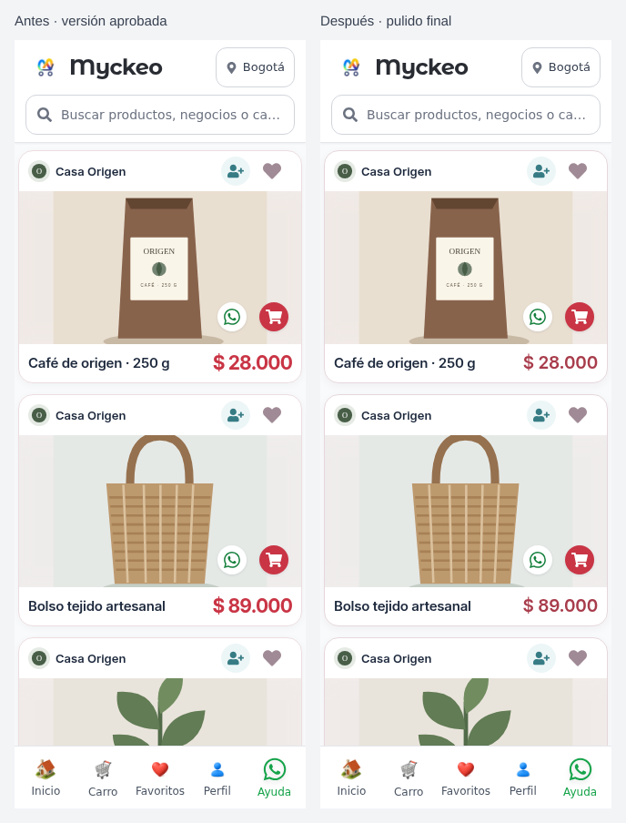
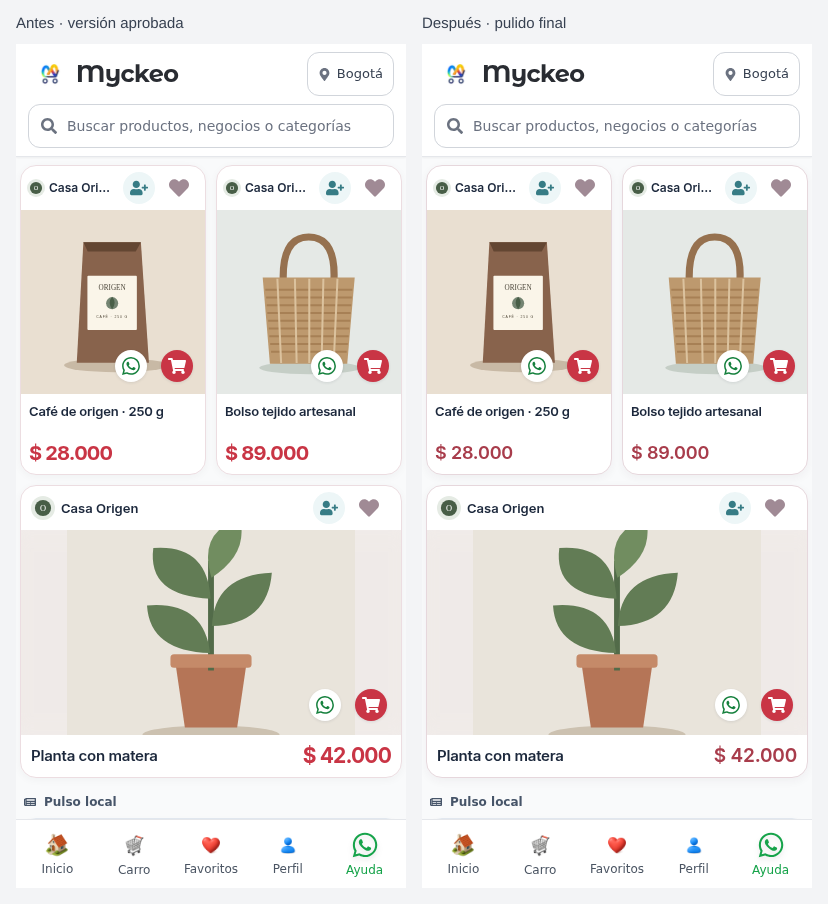
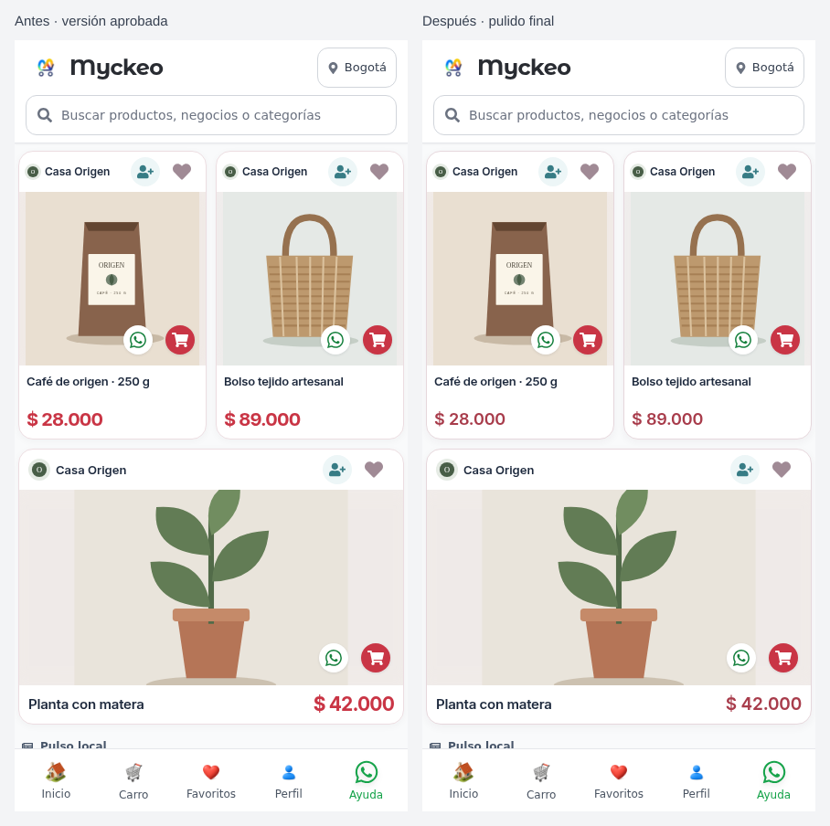
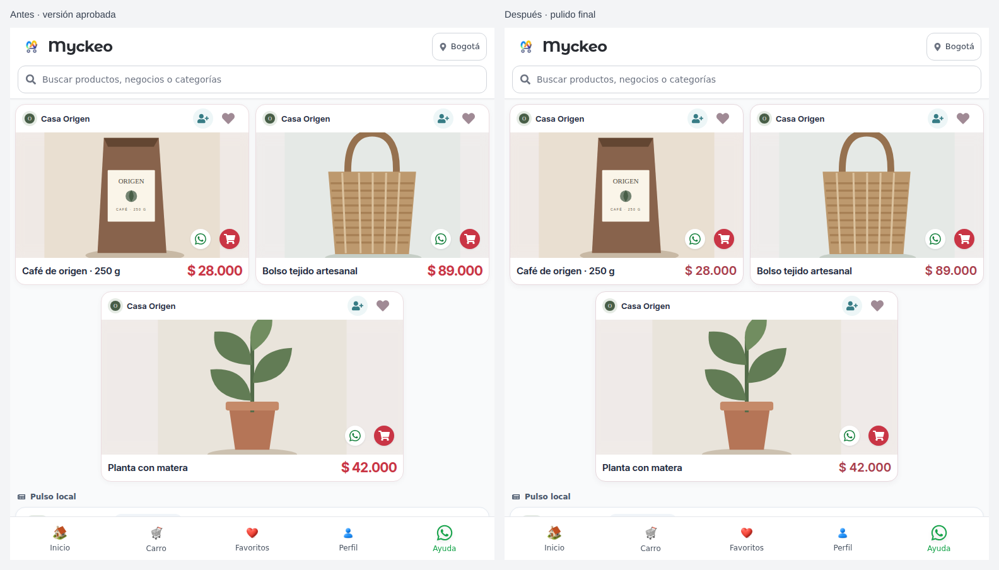
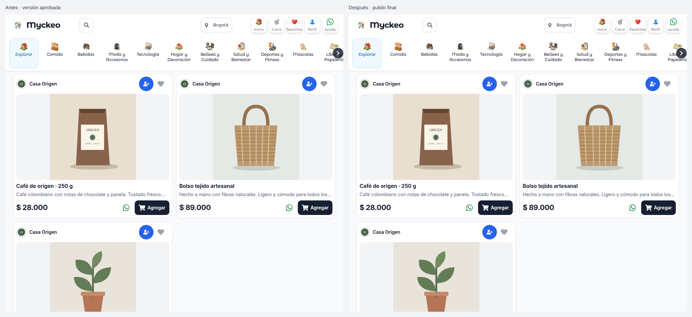
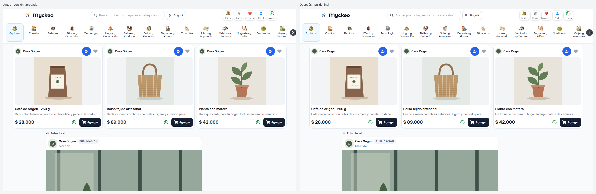
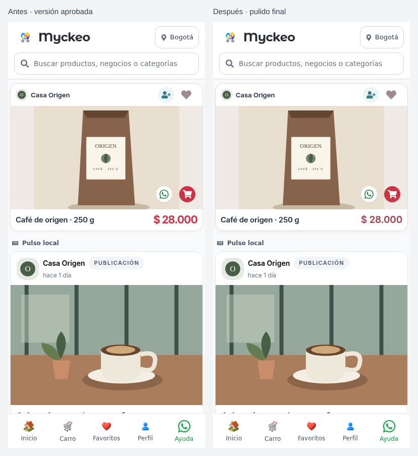
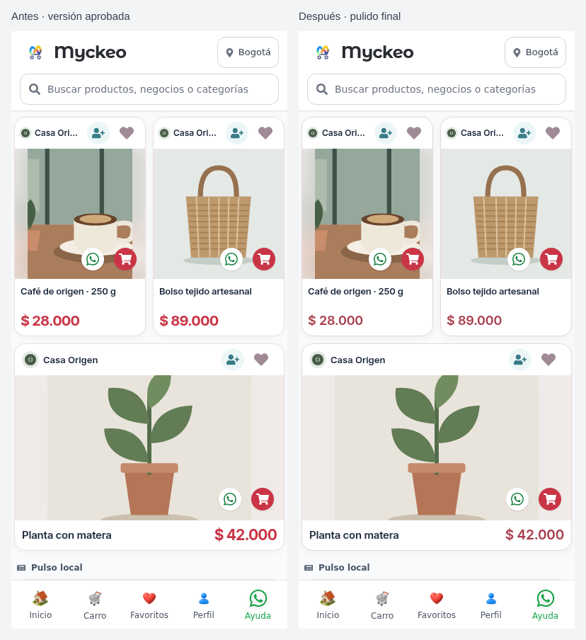
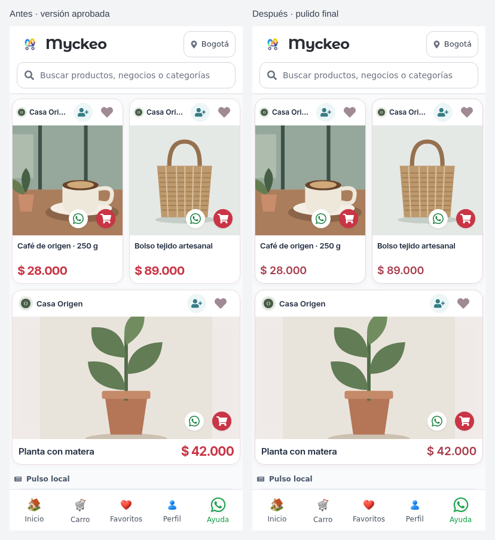
Precios grandes, variantes, agotado e imagen ausente. Se alineó cada tarjeta entre el encabezado y la navegación fija antes de capturar.
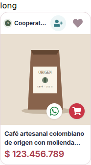
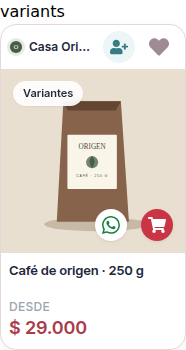
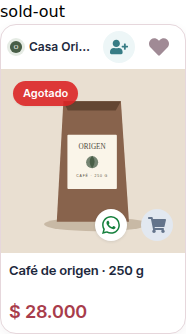
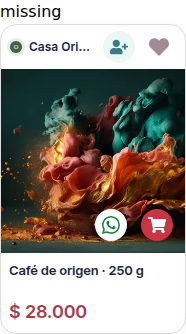
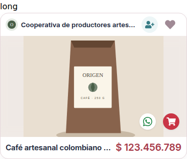
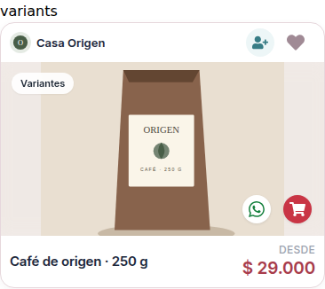
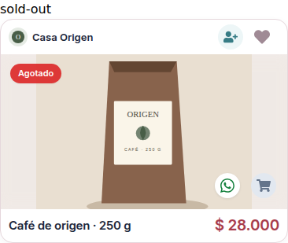
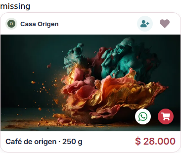